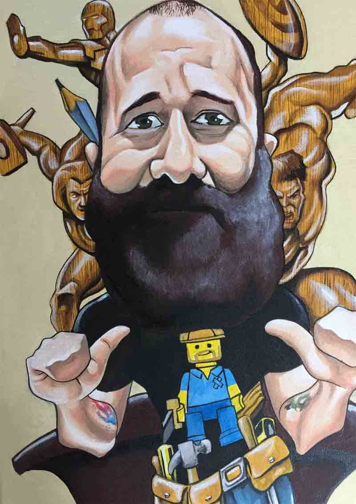

<div class="section group">
  <!--  -->
  
 
  <!-- <div class="text-container"> -->
  <div class="col span_6_of_12">
    <h1>About</h1>
    <p>Craig Hill is a local carpenter, designer and craftsman, from Whitchurch, Cardiff, where he lives with his wife and three young daughters. 

    <p>Craig originally trained as an Art Design Teacher, after completing his BA Hons Ceramics degree at University of Cardiff.</p>

    <p>Craig later left teaching, to pursue his passion in craftsmanship, and general carpentry.</p>

    <p>Craig regularly works on specific carpentry, general property maintenance, and commission pieces in both hard and soft wood.</p>

    <p>Craig is a fully qualified carpenter, and holds a Level 2 City and Guilds qualification in Site Carpentry and Bench Joinery.</p>
  </div>
</div>